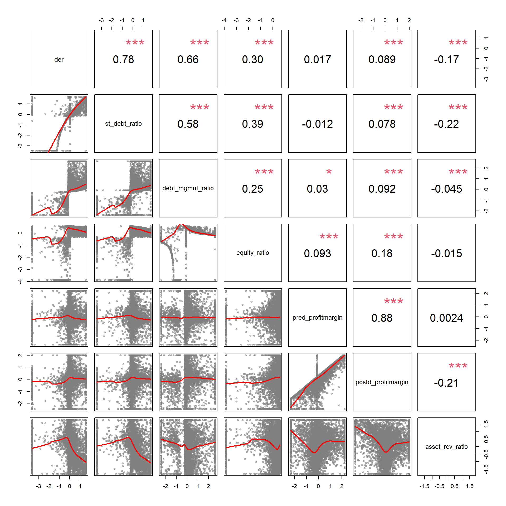

d2 <- dplyr::select( d, -id, -ein, -tax_pd )
par( mfrow=c(4,4), mar=c(4,0,4,0) )
for( i in names(d2) )
{
hist( d2[,i], breaks=25,
col="darkgray", border="white", main=i,
yaxt="n", xlab="", ylab="" )
}rescale <- function(x)
{
x[ is.na(x) ] <- median(x, na.rm=T )
x.05 <- quantile( x, 0.05 )
x.95 <- quantile( x, 0.95 )
x[ x < x.05 ] <- x.05
x[ x > x.95 ] <- x.95
x <- scales::rescale( x, to=c(1,100) )
if( abs( mean(x) - median(x) ) > 5 )
{ x <- log(x) }
x <- scale(x)
return(x)
}
dd <- sapply( d2, rescale, simplify=T )
dd <- as.data.frame(dd)
par( mfrow=c(4,4), mar=c(4,0,4,0) )
for( i in names(dd) )
{
hist( dd[,i], breaks=25,
col="darkgray", border="white", main=i,
yaxt="n", xlab="", ylab="" )
}# library( corrplot )
corrplot( cor(dd, use="complete.obs"),
order = "hclust", tl.col='black', tl.cex=.75 ) library(corpcor)
library(GPArotation)
library(psych)
pc3 <- principal( dd, nfactors = 3, rotate = "varimax", scores = TRUE )
# fa3 <- fa( dd, nfactors = 3, rotate = "varimax", scores = TRUE )
# fa3 <- factanal( dd, factors=3, rotation = "varimax", scores = "regression" )
print.psych( pc3, cut = 0.3, sort = TRUE )
## Principal Components Analysis
## Call: principal(r = dd, nfactors = 3, rotate = "varimax", scores = TRUE)
## Standardized loadings (pattern matrix) based upon correlation matrix
## item RC1 RC2 RC3 h2 u2 com
## daysoperating_coh 3 0.97 0.96 0.042 1.0
## quick_ratio 12 0.97 0.96 0.042 1.0
## currentratio 2 0.97 0.94 0.057 1.0
## months_coh 6 0.94 0.91 0.091 1.1
## dar 1 -0.43 0.24 0.760 1.6
## lb_to_assets 7 -0.38 0.30 0.29 0.714 2.5
## der 4 0.82 0.68 0.318 1.0
## st_debt_ratio 13 0.82 0.70 0.298 1.1
## debt_mgmnt_ratio 10 0.71 0.51 0.488 1.0
## equity_ratio 11 0.35 0.50 0.39 0.612 1.9
## selfsufficiency 5 0.76 0.61 0.392 1.1
## donation_ratio 14 -0.68 0.54 0.465 1.3
## pred_profitmargin 8 0.35 0.66 0.58 0.419 1.6
## postd_profitmargin 9 0.48 0.49 0.51 0.493 2.3
## asset_rev_ratio 15 -0.33 0.41 0.30 0.704 2.1
##
## RC1 RC2 RC3
## SS loadings 4.25 2.73 2.13
## Proportion Var 0.28 0.18 0.14
## Cumulative Var 0.28 0.47 0.61
## Proportion Explained 0.47 0.30 0.23
## Cumulative Proportion 0.47 0.77 1.00
##
## Mean item complexity = 1.4
## Test of the hypothesis that 3 components are sufficient.
##
## The root mean square of the residuals (RMSR) is 0.12
## with the empirical chi square 15775.81 with prob < 0
##
## Fit based upon off diagonal values = 0.87
# print.psych( fa3, cut = 0.3, sort = TRUE )d.dim1 <- dplyr::select( dd, lb_to_assets, daysoperating_coh,
quick_ratio, currentratio, months_coh, dar )
pairs( d.dim1, lower.panel=panel.smooth, upper.panel=panel.cor )d.dim2 <- dplyr::select( dd, der, st_debt_ratio, debt_mgmnt_ratio,
equity_ratio, pred_profitmargin,
postd_profitmargin, asset_rev_ratio )
pairs( d.dim2, lower.panel=panel.smooth, upper.panel=panel.cor )
d.dim3 <- dplyr::select( dd, der, lb_to_assets, pred_profitmargin,
selfsufficiency, donation_ratio,
postd_profitmargin, asset_rev_ratio )
pairs( d.dim3, lower.panel=panel.smooth, upper.panel=panel.cor )d6 <- predict( pc3, dd ) %>% as.data.frame()
dd <- dplyr::bind_cols( dd, d6 )
write.csv(dd, "03-data-ratios/RESCALED-DATA.csv", row.names=F )